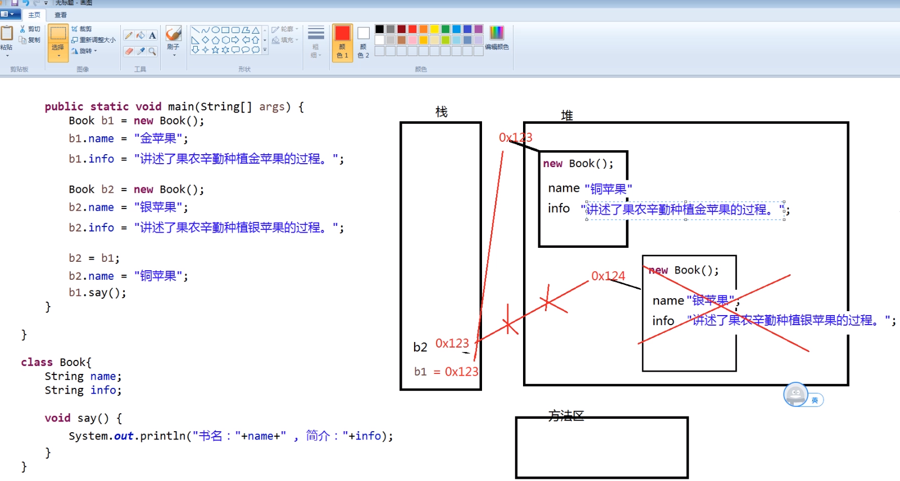

面向对象(Object Oriented)是软件开发方法。面向对象的概念和应用已超越了程序设计和软件开发，是一种对现实世界理解和抽象的方法，是计算机编程技术发展到一定阶段后的产物。
面向对象是相对于面向过程来讲的，指的是把 相关的数据和方法组织为一个整体 来看待，从更高的层次来进行系统建模，更贴近事物的自然运行模式。
面向过程到面向对象思想层面的转变：
面向对象思想从概念上讲分为以下三种：OOA、OOD、OOP
类表示一个共性的产物，是一个综合的特征，而对象，是一个个性的产物，是一个个体的特征。（类比生活中的图纸与实物的概念。）
类必须通过对象才可以使用，对象的所有操作都在类中定义。
类由属性和方法组成：
class 类名称{ 成员属性 成员方法}xxxxxxxxxx// 属性定义格式：数据类型 属性名;// 属性定义并赋值的格式：数据类型 属性名 = 初始化值;// 方法定义格式权限修饰符 返回值类型 方法名(形式参数列表){ // 方法体 return 返回值; // 若没有返回值，仅执行方法逻辑，则返回值类型为 void，不需声明return语句}// 例外：无返回值时使用return语句// 用途：设定条件中止方法执行(见1.2.5实例)形式参数列表：形参，以英文逗号分隔的参数，给定类型名和参数名，该方法执行时需要外部传入的参数；
xxxxxxxxxx// 一个类要想真正的进行操作，则必须依靠对象，对象的定义格式如下:类名称 对象名称 = new 类名称();// 如果要想访问类中的属性或方法（方法的定义），则可以依靠以下的语法形式：// 访问类中的属性：对象.属性;// 对类的属性进行赋值：对象.属性 = 值;// 调用类中的方法：对象.方法(实际参数列表);实际参数列表：实参，以英文逗号分隔的实际数值，是实际传入的参数，必须符合形参的数据类型顺序。
类必须编写在.java文件中，一个.java文件中，可以存在N个类，但是只能存在一个public(公有，所有位置均可访问)修饰的类，作为该.java文件对外的公共类存在，一个.java文件只能有一个主类存在。
.java文件的文件名称，必须与public修饰的类名完全一致。
以下代码为Demo.java文件，位于study.demo包内
xpackage study.demo;// 公有类，只能有一个public class Demo { public static void main(String[] args){ // 创建对象 Person p = new Person(); // 若未进行初始化，对象的默认值未null(空) // 对象属性赋值 p.name = "张三"; p.age = 18; p.sex = '男'; // 调用类的方法 p.say(); System.out.println(p.sum(100, 200)); }}// 其它类，可有多个，此处为Person类class Person{ // 属性 - 特征 String name; int age; char sex; // 方法 - 行为 void say(){ System.out.println("自我介绍：我是" + name + "，我的年龄：" + age + ", 我的性别：" + sex); } int sum(int x, int y){ return x + y; } // return的特殊使用：满足条件即中止方法 void xxx(){ if(ture){ // 此处return将会中止该方法，return后面的代码均无法执行 return; } }}注意：同一个包中不能有重名的类，无论该类在哪个.java文件中。
栈(Stack): Java中一个线程一个栈区，每一个栈中的元素都是私有的，不被其它栈所访问。栈有后进先出的特点，栈中的数据大小与生存期都是确定的，缺乏灵活性，但存取速度比堆快，仅次于CPU中的寄存器：
存储速度快的原因:
GC垃圾回收标准：堆中的对象不存在任何栈中的引用，则会被视为垃圾，将会被回收
实例：
xxxxxxxxxxint a = 10;// 数据名称 a 以及它的值 整型10 存储在栈内存中Person p = new Person();// 对象的引用 p 存在栈内存中// 语句 new Person() 将会在堆内存中声明占用一个内存空间，该空间的内存地址（十六进制, 如0x1234）将存储在栈内存 p 的内存位置中，调用该对象时据此在堆内存中寻址并进行相应操作存放的是类的对象
Java是一个纯面向对象语言, 限制了对象的创建方式: 所有类的对象都是通过new关键字创建：
new关键字, 是指告诉JVM , 需要明确的去创建一个新的对象 , 去开辟一块新的堆内存空间
堆内存与栈内存不同, 优点在于我们创建对象时 , 不必关注堆内存中需要开辟多少存储空间 , 也不需要关注内存占用时长
堆内存中内存的释放是由GC(垃圾回收器)完成的：
垃圾回收器GC 回收堆内存的规则: 当栈内存中不存在此对象的引用时,则视其为垃圾 , 等待垃圾回收器回收（见1.3.1.2）
（见1.3.1.2中的实例）
存放的是
方法区中包含了一个特殊的区域 ( 常量池 )(存储的是使用static修饰的成员)
PC寄存器保存的是 当前正在执行的 JVM指令的 地址
在Java程序中, 每个线程启动时, 都会创建一个PC寄存器
保存本地(native)方法的地址
视频讲解：画图分析 栈、堆、方法区 内存使用的动态过程

对象创建 new Person() 最右侧的小括号，实际就是在调用构造方法。
作用：用于对象初始化
执行时机：在创建对象时,自动调用
特点：
所有的Java类中都会至少存在一个构造方法
如果一个类中没有明确的编写构造方法, 则编译器会自动生成一个无参的构造方法, 构造方法中没有任何的代码
注意：
如果自行编写了任意一个构造器, 则编译器不会再自动生成无参的构造方法。
与普通方法基本相同, 区别在于: 方法名称必须与类名相同, 没有返回值类型的声明
xxxxxxxxxxpublic class Demo3{ public static void main(String[] args){ Person P = new Person(); // 其它操作 } class Person{ // 无参构造方法 public Person(){ System.out.println("对象创建时，此方法调用"); } }}// 运行时将会在创建p对象时在控制台输出“对象创建时，此方法调用”一个类中定义的方法允许重载(即方法名称相同)
注意：方法的重载与返回值无关，如
xxxxxxxxxxint sum(int x, int y) { int z = x + y; return z;}double sum(int x, int y) { int z = x + y; return z;}// 实际上在编程中上述两个方法将在IDE中提示错误信息，表示两个sum重复了，注意不是重载，即两者的方法名和参数列表完全相同了，此时并不构成方法的重载参数类型顺序不同的方法重载：
xxxxxxxxxxdouble sum(int x, double y){ double z = x + y; return z;}double sum(double x, int y){ double z = x + y; return z;}// 以上两个方法构成了sum方法的重载方法的重载 ,可以让我们在不同的需求下, 通过传递不同的参数调用方法来完成具体的功能。
构造方法的重载 ,可以让我们在不同的创建对象的需求下, 调用不同的方法来完成对象的初始化
不进行命名(没有对象名称)的对象，只能使用一次
xxxxxxxxxxint num = new Math().sum(100, 200);// new Math()即为匿名对象，没有对此Math类的对象进行命名而是直接使用class Math{ int sum(int x, int y){ return x + y; }}